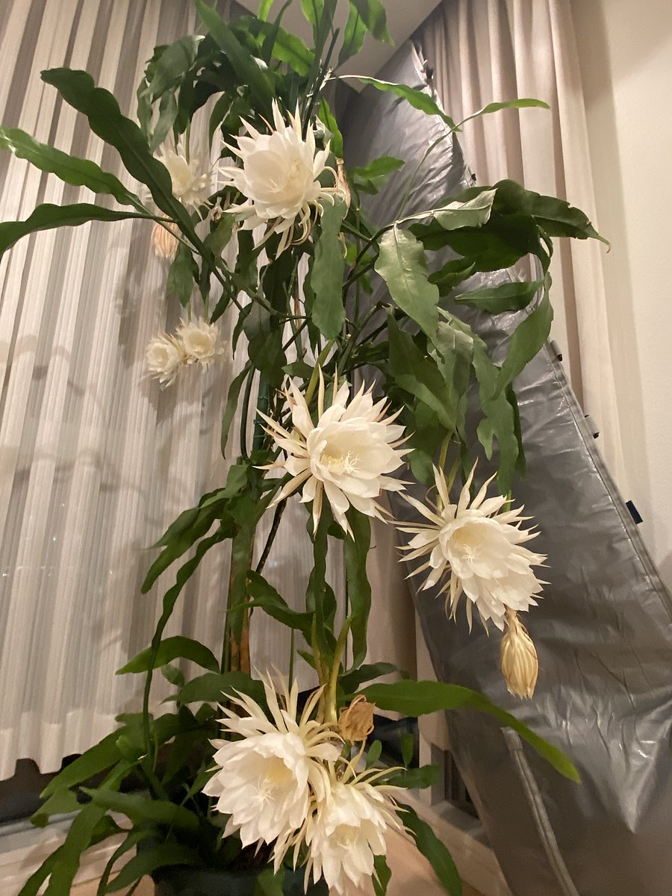

I'm going to be honest, I did not think I would be be doing a site about how to start a garden, but I figured why not? I think it could be quite rewarding. You get your own edible food and beautiful flowers and plants. There are other benefits to growing a garden other than the aesthetics. You get the added benefit of being outside in the sun. This is beneficial for your physical and mental health. You also get exercise, yeah it's not push-ups or 350 pound hip thrusts, but those soil bags can be heavy. Plus, during harvest guess who has to carry all those vegetables back into the house? Surely not Casper the friendly ghost. Another added benefet to starting your own garden is the fact that you get to customize what goes in the garden! Think of all the fruits and vegetables that could be grown like carrots or cucumbers, not to mention all the lovely plants like an aloe vera or sunflower.
Let's get started on some basic steps that you should think through before starting your own garden.
Choosing a space is so important because you want to make sure that it gets enough sun. A flat surface is best, as there is little chance of erosion or water run-off. As mentioned before, sun is important! It's how the plants get thier food and as a by product gives us oxygen! A lot of herbs, vegatables, and fruits require full sun. This means that the location of the garden should get at least 6 hours of direct sunlight, more is better but for a minimum 6 hours is a good starting point. However, this depends on the type of plants you want to have in the garden. There are some plants that thrive in the shade rather than in the sun. There are some plants that only bloom at night, such as Queen of the Night, seen below!
If you're using your lawn you'll have to remove the layer of grass before placing the garden bed. You'll also have to loosen the soil, don't want compact dirt and sufficate the newborn seedlings do we? It's also best practice to keep the garden bed at max four feet wide. You can have it as long as you'd like though, just don't want to step on all the hard work you've put into growing vegetables during harvesting. I mean you can, but it's best if you don't. Another helpful but often overlooked tip is to think about giving the plants enough space. It is easy to place all the seeds close together because they are so small in thier current state, but like everything there is growth. The mature size of each seed you're planting should be considered while planting you don't want to crowd the garden bed. If you're wanting to grow any tomatoes or peas those can be grown vertically using a plant supporter.
You'll want to take space into consideration for a backyard garden as well and figure out a layout you'd like. Most gardens are planted either in the fall or spring. Peas or lettuce would be planted in early spring or late summer. Tulips or daffodils should be planted in the fall. For those plants that are more warm weather enjoyers and could die with the frost during growth, should look out for the average last day of frost in your area. Mulch is a good additive to any backyard garden, it helps improve the look of your garden but also lets your garden keep the weeds down. Mulch also helps keep water in the soil to keep those roots nice and hydrated.
As mentioned before, mulch does help with weeds. However, that does not mean it is a cure all for weeds in your garden. It's recommended to pull the weeds out of your garden at least once a week. Along with any garden or the outside in general come.... pests! You'll want to inspect the leaves and the base of the plant for signs of bites or any sort of damage. Identifying the type of pest is most important becuase then you can find the proper solution to the pest problem! When it comes to watering the plants you'll want to check the soil before you drown the plants! If the soil is still wet or damp you should wait until it is dry soil. Overwatering your plant could lead to root rot and other plant diseases. If the soil is dry then the rule of the green thumb is that plants receive about one inch of rainfall or water a week during the growing season.